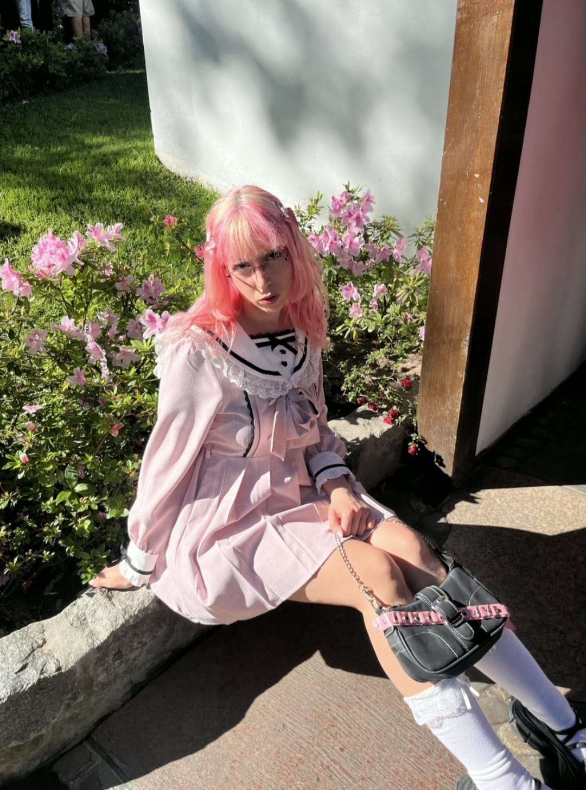
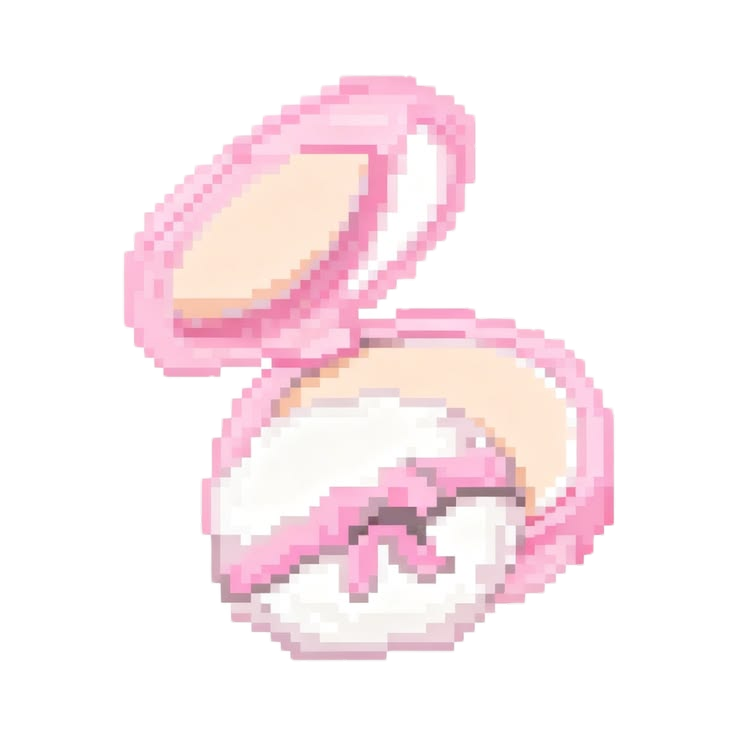

Antonia Kon

(Buenos Aires, 2000)Empecé a trabajar como periodista a mis 18 años, en el suplemento SOY de Página 12. Desde entonces publiqué artículos en medios locales como Rolling Stone, La Agenda y Revista Viva, y en revistas internacionales como Gatopardo.
El periodismo me acercó a la escritura ensayística: me interesan las subjetividades femeninas en el mundo digital, las tribus urbanas y su influencia en Latinoamérica, la literatura gótica del siglo XIX, la ternura como experiencia estética, la sensibilidad hyperpop, el imaginario otaku/geek, la saturación de imágenes y de información propia de nuestra época y las intersecciones entre teoría y cultura pop.
Soy co-autora del libro Sobre el trabajo de Yael Desbats (2023), editado por la editorial dedicada a artistas argentinos Actividad de Uso, y autora del poemario Aprendiz de hada (2024), publicado por la editorial Pequeña Fortuna. Ambos son experimentos de creación colectiva y de traducción (al coreano y al japonés respectivamente). Actualmente curso los últimos años de la Licenciatura en Artes de la Escritura en la UNA, edito la revista digital Vida Cotidiana, coordino eventos culturales relacionados con la literatura y escribo una columna que sale todos los meses en La Agenda. Mi práctica abarca distintos géneros y formatos de "no ficción", desde perfiles y entrevistas hasta crónicas, reseñas, ensayos y análisis literarios.